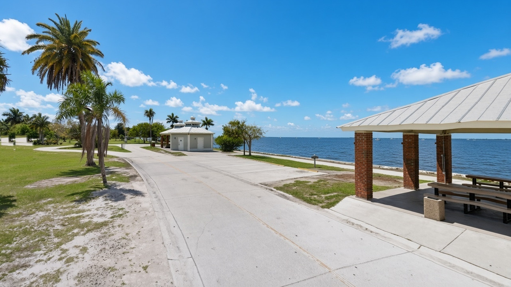
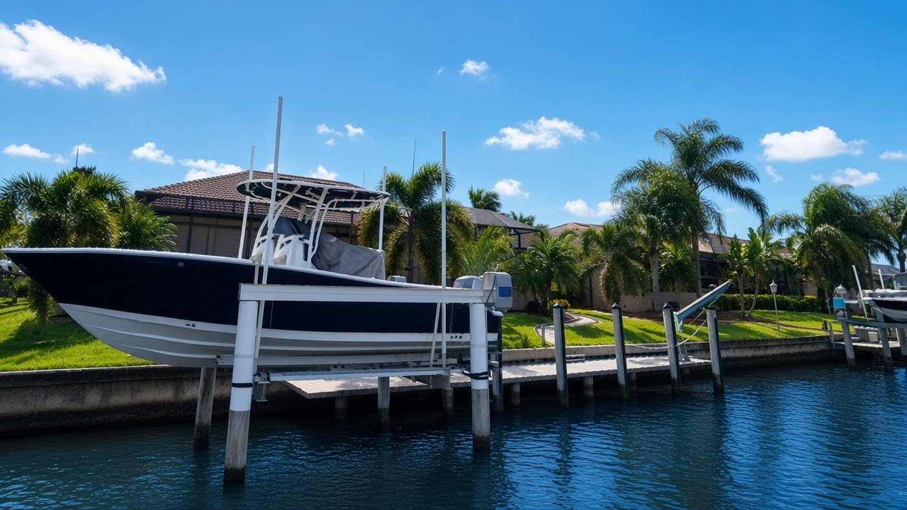

Draft preview for review. Not published. Images shown from local copies.

Punta Gorda & Charlotte County, FL · Insurance
Homeowners insurance is the line item that surprises most people moving to Punta Gorda. The good news for 2026: rates at the state's insurer of last resort went down, not up.
Citizens Property Insurance, the state-created insurer, publishes approved average premiums by county. For Charlotte County, its approved 2026 average across all personal lines policies is $2,715 a year, down 4.0 percent from $2,829. That is one public benchmark, not a quote, and it only covers Citizens policies.
Here is what drives the number up or down, what flood insurance adds, and seven practical ways to pay less. If you are still deciding where to live, start with our Moving to Punta Gorda relocation guide.
The short version
Benchmark: $2,887 a year. Citizens' approved 2026 average for a Charlotte County HO-3 homeowners policy, down 5.9 percent.
Flood is separate. Most homeowners policies do not cover flood. NFIP policies usually take 30 days to start.
Roof and wind features drive price. Roof age, roof-to-wall connections, opening protection, and roof shape all show up on a wind mitigation form.
Citizens flood rule. From January 1, 2027, Citizens requires flood coverage for all remaining personal lines homes with wind coverage, condo units excepted.
In this guide
01What people pay2026 Citizens data02What moves your quoteRoof, age, wind03Flood insuranceA separate policy04The hurricane deductibleHow it works057 ways to pay lessAction list06Before you make an offerChecklist07FAQs6 answersPart 01
The only public, county-level premium numbers come from Citizens.
For Charlotte County, Citizens' approved 2026 average premium is $2,887 a year for a standard HO-3 homeowners policy, $1,438 for a condo unit owner (HO-6) policy, and $2,083 for a dwelling policy, the type used for many rentals. Those averages took effect July 1, 2026 for new policies and at renewal for existing ones.
| Policy type | Current average | Approved change | 2026 average |
|---|---|---|---|
| Homeowners, multiperil (HO-3) | $3,069 | -5.9% | $2,887 |
| Condo unit owners, multiperil (HO-6) | $1,642 | -12.4% | $1,438 |
| Dwelling, multiperil (DP-1 and DP-3) | $2,193 | -5.0% | $2,083 |
| Mobile homes, multiperil | $2,821 | -0.4% | $2,810 |
| Homeowners, wind-only | $5,081 | -5.5% | $4,799 |
| All personal lines combined | $2,829 | -4.0% | $2,715 |
Source: Citizens Property Insurance, 2026 approved rate changes by county; Citizens press release, March 4, 2026.
Two cautions. First, these are averages for Citizens customers only. Citizens is the insurer of last resort, and its own March 2026 release says its policy count had fallen to about 336,000 statewide, so most homes here are insured by private companies whose prices are not published this way. Second, an average hides a wide range: a 1980s canal home with an original roof and a 2020 home with impact windows can be priced very differently.
$2,887
Citizens 2026 average, Charlotte County HO-3
$2,901
Citizens 2026 average, Sarasota County HO-3
-8.8%
Citizens' statewide average cut for homeowners multiperil
64%
Charlotte County homes built before 2000
Sarasota figure from the same Citizens county table. Home age from U.S. Census Bureau American Community Survey 2020-2024: 64.4 percent of Charlotte County housing units were built before 2000.
Part 02
Insurers price the house, not just the ZIP code.
The biggest levers are the roof (age, covering, and how it is attached), the home's age and systems, documented wind mitigation features, the deductible you choose, and the coverage amount. Location matters too, but two homes on the same street can get very different quotes.
Florida law limits how insurers can use roof age. Under section 627.7011, an insurer may not refuse to issue or renew a homeowners policy solely because the roof is less than 15 years old. For a roof 15 years or older, it must let you get an inspection first, and it may not refuse solely for age if the inspection shows at least 5 years of useful life left. Citizens asks for that 5-year documentation once a shingle roof passes 25 years or a tile or metal roof passes 50.
Rule
Section 627.7011, F.S.
Citizens
25 yrs soft, 50 yrs hard
Older homes usually need a four-point inspection covering the roof, electrical, plumbing, and heating and cooling. Citizens requires one for homeowner, dwelling, and mobile home applications on properties more than 20 years old, and says serious hazards such as exposed wiring or active leaks should be repaired before you apply. In Charlotte County, 64.4 percent of housing units were built before 2000, so this comes up often.
Citizens trigger
More than 20 years old
Covers
Roof, electrical, plumbing, HVAC
Florida requires insurers to offer discounts for features that reduce windstorm loss, and those discounts apply to the windstorm part of the premium. A qualified inspector documents them on state form OIR-B1-1802. Homes built under the 2001 Florida Building Code or later qualify for at least a 68 percent discount on that windstorm portion, according to the Department of Financial Services.
Form
OIR-B1-1802
Valid for
Up to 5 years
Our full guide to the Florida wind mitigation inspection walks through each item on the form and what usually earns a credit.
Source: Section 627.7011, Florida Statutes; Citizens Property Insurance, inspections; Florida Department of Financial Services, Premium Discounts for Hurricane Loss Mitigation; U.S. Census Bureau, ACS 2020-2024, Charlotte County, via Census Reporter.
Part 03
Wind and flood are priced, sold, and claimed differently.
Most homeowners policies do not cover flood damage, according to FEMA's National Flood Insurance Program. Flood coverage comes from an NFIP policy or a private flood insurer. NFIP building coverage goes up to $250,000 and contents up to $100,000, and a new NFIP policy normally takes 30 days to start.

Waterfront homes need both a wind policy and a flood policy, priced separately.
The 30-day wait has exceptions. There is no wait if you buy flood insurance while making, increasing, extending, or renewing a mortgage, which is why buyers should get a flood quote during the inspection period, not after closing. Elevation certificates and mitigation such as elevated utilities can lower NFIP premiums.
Citizens adds its own rule. After a phase-in that started in 2023, Citizens requires flood insurance for all remaining personal lines residential policies with wind coverage at renewals on or after January 1, 2027, except condominium unit owner policies. Citizens also notes that a private policy with a higher premium can still make sense, for example if it offers broader coverage, and that Citizens policyholders can face a surcharge of up to 15 percent of their annual premium if Citizens exhausts its ability to pay claims after a major storm.
Check the flood zone first
Every Charlotte County parcel record on the Property Appraiser's site lists its FEMA flood zone, flood panel, and base flood elevation. Our guide to the Charlotte County Property Appraiser site shows where to find it.
Source: FEMA National Flood Insurance Program, Buy a Flood Insurance Policy; Citizens Property Insurance, flood requirements; Citizens Property Insurance, depopulation and eligibility.
Part 04
It is usually a percentage, and it is usually the biggest number on the policy.
Florida insurers must offer hurricane deductible options of $500, 2 percent, 5 percent, or 10 percent of the dwelling limit, with exceptions for higher-value homes, which do not have to be offered the $500 option. The deductible applies once per calendar year to hurricane losses with the same insurer or insurer group.
The math is simple and worth doing before you choose. On a home insured for $400,000, a 2 percent hurricane deductible is $8,000 and a 5 percent deductible is $20,000. A higher deductible usually lowers the premium, but you need that cash available after a storm. If a second hurricane hits in the same year, you pay the greater of what is left of the hurricane deductible or the policy's regular deductible.
Source: Florida Department of Financial Services, Florida's Hurricane Deductible.
Part 05
Most of these cost little or nothing.
The most effective steps are documenting wind mitigation features, keeping roof records, choosing a deductible you can actually cover, comparing private offers with Citizens, and checking My Safe Florida Home if the house is your homestead.
If the home has hip roof framing, roof-to-wall clips or straps, a sealed roof deck, or impact protection, the form proves it. Without the form, the insurer may not apply the credit. A completed form is valid for up to five years if nothing material changes.
Find the reroof permit date on the county records and keep the permit and product approval. The wind mitigation form asks for the roof covering's permit application date or its product approval number.
Rated shutters and impact windows and doors are one of the categories on the wind mitigation form. If you already have them, make sure the inspector can verify them.
Compare the premium at 2, 5, and 10 percent against the cash you could cover after a storm.
Under Citizens' eligibility rule, if a comparable private offer is not more than 20 percent above the Citizens premium, you are not eligible to stay with Citizens. Ask your agent to price the whole package, including flood.
The state program offers free hurricane mitigation inspections for site-built, owner-occupied, homesteaded single-family homes and townhouses. Its grants match $2 from the state for every $1 from the owner, up to $10,000 from the state, for homes whose original building permit application was made before January 1, 2008 and whose insured value is $700,000 or less. Program rules change with legislative sessions, and its applicant portal was temporarily closed in November 2026 and was reported to reopen December 4, 2026.
State grant
Up to $10,000
Permit before
January 1, 2008
Get the flood quote during your inspection period so it can start at closing without the 30-day wait.
Source: Florida Department of Financial Services, mitigation inspections and forms; Section 215.5586, Florida Statutes, My Safe Florida Home; WFLX, My Safe Florida Home portal update, November 11, 2026; Citizens Property Insurance, eligibility.
If the house will be your permanent residence, file for homestead too. It does not lower insurance, but it does lower property taxes, and Amendment 3 raises the exemption starting in 2027. Our Charlotte County homestead exemption guide has the deadlines.
Part 06
Insurance belongs in the inspection period, not the week before closing.
Ask the seller for any existing wind mitigation form and four-point inspection, check the roof permit date and flood zone on the county record, and get both a homeowners quote and a flood quote before your inspection period ends.
Before the offer
Look up the parcel on the Property Appraiser's site: year built, flood zone, and base flood elevation. Ask the listing side for the roof permit date and any existing wind mitigation form.
Inspection period
Order the general inspection, plus a four-point and wind mitigation inspection if the home is older or the insurer will need them. Request homeowners and flood quotes.
Before closing
Bind the homeowners policy and buy flood coverage tied to the loan closing so there is no 30-day wait.
After you move in
File for homestead by March 1 if it is your permanent residence, and calendar the wind mitigation form's five-year life.
Buying a condo? The association's master policy covers the building, and your HO-6 covers your unit. Our Punta Gorda condo buyer checklist covers what to ask the association. On the water, see our waterfront buying guide.
Part 07
How much is homeowners insurance in Punta Gorda?
There is no single public average for every insurer, but Citizens Property Insurance publishes its own. For Charlotte County, Citizens' approved 2026 average for a standard homeowners (HO-3) policy is $2,887 a year, down 5.9 percent. Your quote depends on roof age, wind mitigation features, the deductible you pick, and coverage limits.
Does homeowners insurance cover flooding in Florida?
Usually not. FEMA notes that most homeowners policies do not cover flood damage, so flood is a separate policy from the National Flood Insurance Program or a private flood insurer. A new NFIP policy normally takes 30 days to start, unless you buy it while closing a mortgage.
Do Citizens policyholders need flood insurance?
Yes, on a phased schedule. For renewals on or after January 1, 2027, Citizens requires flood insurance for all remaining personal lines residential policies with wind coverage, except condominium unit owner policies.
Can an insurer refuse my policy because of roof age?
Not solely for roof age if the roof is less than 15 years old, under section 627.7011, Florida Statutes. For a roof 15 years or older, the insurer must let you get an inspection first, and it cannot refuse solely for age if the roof has at least 5 years of useful life left.
What is a hurricane deductible?
A separate deductible that applies to hurricane damage. Florida insurers must offer options of $500, 2 percent, 5 percent, or 10 percent of the dwelling limit, with some exceptions, and it applies once per calendar year with the same insurer.
Does a wind mitigation inspection lower my premium?
It can. Florida law requires insurers to offer discounts for documented wind-resistant features, and the discounts apply to the windstorm part of the premium. Homes built to the 2001 Florida Building Code or later qualify for at least a 68 percent discount on that portion, according to the Florida Department of Financial Services.
Related Reading
Browse current homes on our properties page or estimate a full payment, insurance included, with our mortgage calculator.
Also: Homestead exemption guide · Is Punta Gorda a good place to live? · How we work with buyers
Want real numbers on a specific house?
We can help you pull the roof, flood, and inspection details early so your insurance quotes are accurate before you commit. Call or text The Helgemo Team at (941) 770-2275.
The office is at 320 Cross Street, Punta Gorda, Florida 33950. You can also meet Brian Helgemo or read more about the team.
Sources: Citizens Property Insurance, 2026 Approved Rate Changes by County; Citizens Property Insurance, 2026 multiperil rates press release, March 4, 2026; Citizens Property Insurance, Inspections; Citizens Property Insurance, flood requirements; Citizens Property Insurance, depopulation and eligibility; Section 627.7011, Florida Statutes; Florida Department of Financial Services, Florida's Hurricane Deductible; Florida Department of Financial Services, Premium Discounts for Hurricane Loss Mitigation; Florida Department of Financial Services, Mitigation Notices, Inspections and Forms; Section 215.5586, Florida Statutes; WFLX, November 11, 2026; FEMA NFIP, Buy a Flood Insurance Policy; U.S. Census Bureau, American Community Survey 2020-2024, Charlotte County. This article is general information, not insurance or legal advice. Talk with a licensed insurance agent about your property.